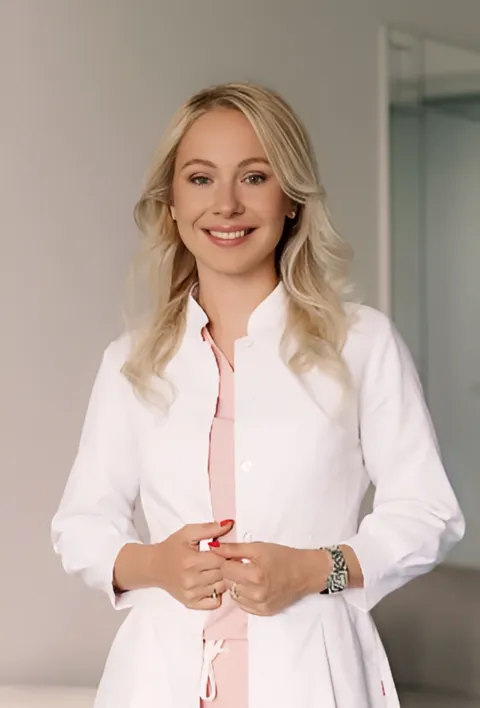
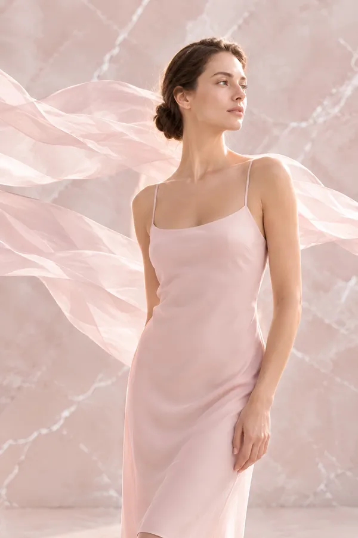

Борисенко Анастасия Сергеевна
Руководитель, научный консультант и идейный вдохновитель клиники ASBeauty
- Стаж19+ лет
- Учёная степеньКандидат медицинских наук
- Консультацияот 7 000 ₽
- Специализация
- пластический, эстетический, микро- и челюстно-лицевой хирург
- Языки
- русский, английский
О враче
Биография
Кандидат медицинских наук, пластический и челюстно-лицевой хирург, но прежде всего — исследователь и творец. Миссия — соединять передовые технологии с безупречной эстетикой, чтобы дарить пациентам не просто результат, а новое качество жизни.
Истинная красота рождается на стыке науки, опыта и индивидуального подхода. Каждая операция — не шаблон, а точный расчёт, где миллиметры решают всё. Анастасия Сергеевна работает с лицом как с архитектурным проектом: восстанавливает гармонию, сохраняя естественность.
- Действующий член Совета РОПРЭХМеждународный эксперт с опытом сложнейших реконструктивных операций
- Доцент кафедры пластической хирургииПервый МГМУ им. Сеченова — учит будущих хирургов не только технике, но и философии эстетики
- Заведующая инновационного центра эстетической хирургии лицаФГБНУ «НИИГБ им. Краснова» — там, где наука встречается с практикой
- Спикер с международным признаниемПубликации в топовых журналах (PRS, Q1, Q2) — делится только проверенными знаниями
До и после
Наши работы
Найдено работ: 18


Квалификация
Образование
2024–2025 гг.
- 2024Первая в мире в команде провела роботизированную абдоминопластику в сочетании с холецистэктомией
- 2024Доклад «Personalized Strategy for Facial Rejuvenation Surgical Planning», IAAM 24, Dubai
- 2024Награждена премией «За вклад в развитие Российского общества пластических, реконструктивных и эстетических хирургов»
- 2024Получила Благодарность Министра здравоохранения РФ Мурашко М. А. за хороший и добросовестный труд
2021–2023 гг.
- 2021Премия «Лучший пластический хирург» Beauty Award
- 2021Основала «Первую Международную многопрофильную онлайн-школу для пластических хирургов»
- 2022Летний конгресс «Пластическая, реконструктивная хирургия и косметология», Санкт-Петербург
- 2023Международный конгресс по пластической хирургии «ICOPLAST II WORLD Congress 2023», Дубай
- 2023Летний конгресс «Пластическая, реконструктивная хирургия и косметология», Санкт-Петербург
- 2023Международная конференция по маммопластике
- 2023«Национальный конгресс с международным участием пластических хирургов», Турция
- 2023VIII VSAPS Annual International Scientific Congress on «Health-Beauty-Safety Aesthetic», Вьетнам
- 2023XII Национальный конгресс «Пластическая хирургия, эстетическая медицина и косметология», Москва
2015–2020 гг.
- 2015«Живая хирургия», Санкт-Петербург
- 2016CATBBAS, Brussel
- 2017«Бьютификация лица», Сеул
- 2017Rhinoplasty Course Dr Yves Saban & Dr Baris Cakir, Испания
- 2018Constantin Stan, Авторский курс по аугментации молочных желез Gary Alter, Румыния
- 2018Aestetic plastic surgery, Румыния
- 2018Конференция по проблемам реконструктивной и эстетической хирургии у больных раком молочной железы, Москва
- 2018Aestetic Breast Augmentation, Бельгия
- 2018Advanced Aesthetic «Продвинутая эстетическая хирургия груди и тела. Продвинутая медицинская косметология лица и тела»
- 2018Стажировка в клинике Constantino Mendietta, Майами
- 201824-ый Международный конгресс ISAPS, Майами
- 2018Курс по липомоделированию Roger Khouri, Майами
- 2018Стажировка по урогенитальной пластике Gary Alter
- 2019Стажировка по трансгендерным операциям Christopher Salgado, Майами
- 2019Plastic surgery & dermatology, Корея
- 2019Стажировка «Vertical restore» Renato Calabria, Италия
- 2019Стажировка «Трансгендерные операции» Salgado, Майами
- 2019«Грудь & Лицо. Эволюция трендов», Москва
- 2019Aestetic Breast Augmentation, Германия
- 2019Advanced Aesthetic «Продвинутая эстетическая ринопластика и контурирование лица. Продвинутая медицинская косметология лица и тела», Санкт-Петербург
2009–2014 гг.
- 2009ОПРЭХ, «Эндопротезирование молочных желез, мастопексия, редукционная маммопластика». Реконструкция молочных желез (экспандеры, имплантаты, тканевые лоскуты). Комплексное лечение ожирения, абдоминопластика, бодилифтинг, подтяжка бедер, брахиопластика, Москва
- 2009IPRAS, European Sections of IPRAS, Греция
- 2009IAPSO, «Реконструктивная, пластическая и эстетическая хирургия молочных железы», Казань
- 2010ОПРЭХ, «Реконструкция молочной железы», Москва
- 2011Обучающий курс по пластической эстетической и реконструктивной хирургии ISAPS
- 2011Национальный конгресс «Пластическая хирургия»
- 2013IV международный обучающий курс по пластической хирургии, Екатеринбург
- 2014Стажировалась на базе ведущей клиники по пластической хирургии Antiaging Group клинике Tres Tores, Барселона, Испания
- 2014(Мартин Дель Йерро) — Увеличивающая маммопластика, Мадрид, Испания
- 2014«Beauty Through Science», Стокгольм, Швеция
2005–2008 гг.
- 2005ОПРЭХ, «Эстетическая маммопластика», Москва
- 2006ОПРЭХ, «Лигатурная хирургия лица и молочных желез. Хирургия инволюционных изменений лица и молочных желез», Москва
- 2007ОПРЭХ, «Липосакция, липофилинг, липошифтинг», Москва
- 2007ОПРЭХ, «Омолаживающие операции на лице и шее. Эндопротезирование молочных желез. Одномоментная мастопексия и эндопротезирование. Капсулярная контрактура», Москва
- 2007Валекс-М, «Контурная пластика лица с использованием филлеров Restylane, Restylane Perlane, Restylane Touch, Restylane Vital, Restylane Lipp», Москва
- 2007APTOS Production, «Малоинвазивные методы АПТОС», Москва
- 2007Валекс М, «Теория и практика применения препарата «Диспорт» в эстетической медицине», Москва
- 2008ОПРЭХ, «Липофилинг, липошифтинг, «S-лифтинг», минилифтинг. Субпериостальная подтяжка средней трети лица», Москва


Моя философия
Истинная красота рождается на стыке науки, опыта и индивидуального подхода. Каждая операция — не шаблон, а точный расчёт, где миллиметры решают всё. Я работаю с лицом как с архитектурным проектом: восстанавливаю гармонию, сохраняя естественность.

Рассрочка
На все операции от
банка-партнёра
Стоимость
Стоимость услугОперации под ключ
Самые популярные предложения клиники
Круговая подтяжка лица (SMAS)
Риносептопластика
Ринопластика
Анастасия БорисенкоО первой консультации — за минуту
Первый шаг к
желаемому результату
Координатор заботы подберёт хирурга
и удобное время.
Спасибо!
Заявка отправлена. Координатор свяжется с вами в ближайшее время.